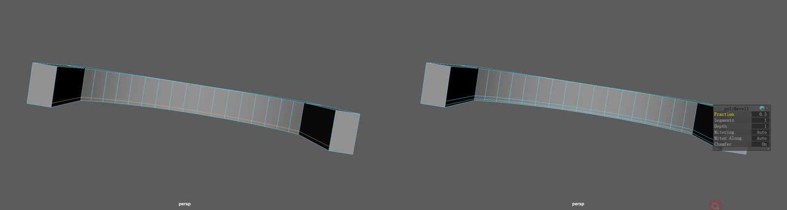

As for character design, we chose violin and erhu as main character because they are Similar in form while they both are stringed instruments. Besides, they are anthropomorphised with the limbs and facial expression, which makes the animation more vivid. On top of that, we want to present Chinese and Western instruments that embody the cultures of China and the West respectively.
The group discussed animation for the first time. We are very interested in the differences and integration of Chinese and Western cultures. At the same time, inspired by the existing works, such as Our Shining Days , which tells A battle of Chinese and Western Instruments, the theme of the our animation was determined to be an animation about an erhu and A violin. Through the ensemble of the two instruments, we want to show the conflict and fusion of eastern and western instruments.

Figure 1: Our Shining Days
We further discussed the style of animation.
First, we used the animation
Music Land
for reference to consider how to personify the erhu and violin.
And we learned from some network personified animation character design as our role design reference.

Figure 1: Music Land
Figure 1: cartoon reference
To get inspiration for animation, Zhenyu Zhou and I went to the Cadogan hall to listen to a symphony.
The symphony was amazing beyond words.
At the same time, the scene in the concert hall was breathtaking, providing the setting for a powerful performance.
As this concert was very special, I decided to make our scene based on this concert hall.
In addition, the lighting effect of the stage was also very important, and the lighting performance of the concert hall provided me with some inspiration.

Figure 1: Cadogan Hall
I used procreate to trace the scene outline of the hall to make the scene prototype diagram.
The hall was made with prototype drawings.
Figure 1: outlines of the hall in prototype
First, the cube and cylinder of Polygon are used to perform Boolean difference operation to obtain an outer box.
Then extrude the length of the ground on both sides of the arcade to get a frame of the arcade.
Then, in order to make the decorative edges protruding from the inside of the arcade,
I used multi-cut tool to add lines to the inner edges. For convenience,
I followed the ratio of 10% for each side, and then I used Bevel operation to pull out two edges.
If it is necessary to adjust the position, Slide Edge can be used to adjust.
Then extrude the outlined edges to create a preliminary arcade.
Figure 2: boolen-difference and extrude face
Figure 3: multi-cut to add edges
Figure 4: bevel the edge
Figure 5: extrude the inner face
Likewise, the arcade in the front fo the hall was made using the similar method. The difference is that I add many cicular space for decoration, which was made by curve projection. With a nurbs circle and the booleaned mesh, project the curve on the mesh in the front view (the view is important as the projection method is decided by the camera view). Then use the projected curve on the mesh to split the mesh.
Figure 6: the arcade in the front of the hall
Figure 7: using projection to make decorations
Using projection tool, I made the windows as well.When modeling the frames of the window I mainly combined different meshes rather than modeled them from a single mesh, which is time-saving and efficient for our animation.
Figure 8: the window and the reference image
In order to show the conflict and transformation,
the group discussed the main plot today, considering the elements, beginning, development, climax and ending of the story.
I proposed that this process could be a three-step process,
with good performances labeled UP and bad ones labeled down.
The first segment is a solo of two instruments, which is normal,
which is UP;
And then the self expression,
again the solo part, for down. Then the ensemble, the two playing normally, is UP.
In the ensemble, the two instruments want to express themselves more, so the ensemble becomes unpleasant and becomes down.
Then the audience feedback is not good, the two instruments gradually realize the importance of ensemble,
gradually become better, and finally become UP.
UP, down, UP, down,UP, in this way, two valleys drive the story, multiple turns make the story more expressive, and the climax is the conflict and reconciliation of the two instruments in the ensemble stage.
Figure 1: a three-step process
However, due to time and energy, we had to change the story into a single paragraph, with only one conflict in the middle, and the self-expression of the solo part was cut away. Although we felt that one conflict point was a little weak during production, we could make up for it through other elements such as audience, notes and so on. In addition, since we have considered two scenarios, we can present the first conflict point in the Storage room. They already clash during practice preparation, setting the stage for later episodes.
Figure 2: one turning point
According to the plot arrangement, I came back to the first scene.
The most prominent thing in the first scene is the crystal chandelier in the center of the room.
According to the given design drawing, I modeled the light in Maya.
The lamp holder is decorated with the words "Music", and below it are a series of teardrop-shaped crystal lamps.
Figure 1: the crystal chandelier created from the storyboard
To make the light frames, firstly I used the EP curve tool to draw a given shape and then I used rebuild and smooth to
make a better curve.After that, to make a three-dimensional object, I extrude the curves as displayed in Figure2
Figure 2: extrude faces to make polygons
Apart from modeling, I began to know about the lighting and material. Using the presetting glass material helped me to build a crystall light.
I adjusted the roughness, the transmission and so on. To implement a pleasant lighting performance, I used the mesh light .
To obtain the final performance required much work still.

Figure 3: the lighting of the crystal chandelier
Figure 3: the final performance of the lighting of the crystal chandelier
During the process of building the scene, I became very interested in lighting.
The impact of good lighting on visual performance is beyond words.
At the same time, for each rendered image,
I found that everyone needs a center when observing a picture.
A disordered drawing always brings bad experience to watchers.
Whether the center refers to something that people focus on, or whether everything has the same style and gives a sense of wholeness,
or whether the image reflects an event that people immediately perceive could be called the centre of a visual work.
In photography, shooting is to record the picture,
to record something worth recording.
In the production of animation, too, every screen scene should be helpful to show the content.
The design of 3D animation incorporating functionality and artistry not only reflects a specific place and a certain event, but also serves as a foil for the protagonist in the animation (Yang 2021) .
Here we do not deny some pictures irrelevant to the theme, some pictures can simply demonstarte pure special effects. But no matter what kind of purpose,a visual product which can let people quickly capture information is successful. Here I extract two key words. One is information, the theme, the conceptual and the narrative of the animation; The other is concentration, the central element of every frame.
A concert needs an audience. When we were considering the production of audience,
we thought a lot of plans. First, we wanted to add the audience screen in the postproduction by AE or PR,
but we gave up considering the possible inconsistency of some screen styles.
The second was to use white models in the scene, without lighting, with the way of black shadows.
Then we found the right audience kits and loaded the animation by importing mixamo,
and finally put it into the scene. The number of different characters in the scene is about 50-60,
using different sitting positions and colors of clothes, filled the whole music hall.
Figure 1: using mixamo to load animations
Figure 2: audiences in the hall
Then, according to the actual scene of cadogan concert Hall, there are many searchlights and speakers on the roof. Due to time constraints, we found existing equipment materials and added them to the concert hall. So far, the concert hall was almost completed.
Figure 3: searchlights and speakers
With the basic scene modeldd, I made the Erhu while Zhenyu was responsible for the Cello.
The production of erhu is relatively simple, mainly the production of the instrument rods of erhu.
Here, I made them separately and finally adopted the method of combine.
Boolean arithmetic was used to make the slot of the instrument rod, and the protruding outline of the erhu body was made by bevelling.
The hand making is a conventional hand making method, but we designed two joints to control the movement of the hand in the anthropomorphic way.
We thought that the semi-anthropomorphic way would make the erhu more lovely.
Figure 1: the process of modeling erhu
Once the scene and character are made, the next step is to import the character into the scene,
adjust the size and style, etc. The size of Erhu and Cello in our initial setting is larger than that of the final version.
The initial image is suitable for the storage room, but some disharmony will be found after it is put into the hall.
So I reduced the size and specified the current model size for subsequent modeling and animation.
Figure 1: put the characters into the scene
In order to make the erhu more vivid movements.
I have carefully bound the strings and poles of the erhu.
In the beginning, the animation of the strings and rods was stiff, and the bending action was not smooth. Later,
I found that it was the segmentation problem. Then, in order to make the strings more smooth,
I added many bones to make them bend freely.
Firstly, I added IK Splineto the strings and rods. In order to achieve the bending effect,
point control is needed to control the control curve obtained by adding IK. The Figure 1 shows the curve generated by IK.By adjusting the curve, the skeleton can be smoothly bent,
and the points on the curve can be controlled through the cluster (Figure 2).
Finally, a total controller is used to combine all clusters on the curve,
and the deformation performance is controlled by adjusting the weight of each (Figure 3).
Figure 1: the curve generated by IK Spline Handle
Figure 2: add cluster to control the vertex
Figure 3: adjust the envelope
After part of the preparation, we had a certain division of labor, and I continued to be responsible for the scene lighting and lens.
There are relatively few academic papers on animation on the Internet,
and many available materials are also related to photography or film.
In the study of animation, I want to explore a separate targeted field.
Therefore, I want to explore its feasibility and specific operation methods in animation production based on lens knowledge.
I learned the term the language of the lens first time in Mercado’s book (2019) "The Filmmaker’s Eye" which actually took an insight into the scope of films. Nevertheless, these theories could be applied in animation as well.
Likewise, about the camera, different spatial distance of shots influences emotional and rational appeals (Kim, Lee & Choi, 2019) . As for the composition, Ward (2002) gave a definition of it and introduced the way to implement a good composition. When it comes to lighting, Loe and Rowlands (1996) presented a lighting design framework. These researches profoundly helped me theoretically and practically.
Material is a key element of the presentation. In the process of animation production,
I have more understanding of the material. Add normal maps for more realistic physics, add some reflection, metal, etc to make the image look better.
As you can see in the Graph Network map for the floor (Figure 1), there are base colour, roughness, bump properties attached to the map.
The physical effects before and after as shown in the picture are very obvious.
Material learning also laid a foundation for me to create better picture performance later.
Figure 1: graph metwork of the floor material

Figure 2: before (left) and after (right) adding bump texture
When making erhu jumps, I followed the basic animation rules.
Bouncing is an action in the form of a parabola, as shown in the figure.
The Y-axis of the animation curve is green in the form of a parabola.
Figure 1: the animation curve of the jumping of erhu
The rule of thirds is the most common method to draw the audience’s eye to the centre of interest
(Maleš, Heđi, & Grgić, 2012)
.
The golden section can help achieve pleasing visual demonstration.
Framing is another compositional tool.
These conceptions are significant for my selections of certain frames of the animation.
Figure 1: the compositions utilized in the animation
Erhu represents traditional Chinese musical instruments and I added many things with Chinese elements,
such as Chinese-style tables and chairs, Chinese porcelain and several representative instruments, such as Guzheng,
Pipa and Huqin. Likewise, Similarly, in the violin part, more representative western elements are added,
such as Western furniture and wall murals of other Western Musical Instruments.
Figure 1: cultural elements in the first scene
In this part, we started to move forward, and I started to work on the second scene.
For the searchlight part, I attached a lot of disk light to the searchlight to create a realistic stage effect.
In the later animation production, spotlight made a great contribution to our animation effect,
and also provided support for my theory. Using light can greatly improve our ability and
efficiency to convey information through animation, focus light, and create visual centers.
Figure 1: using spotlight to highlight the character
The implementation of the constrain of the spotlight is not a easy work. As we can tell from the Figure 2, the spotlight group incorporates three elements, the lighting model, the disk light and the circular curve controller. Firstly, I adjust the position and rotation of the light according with the light mesh, then, group them. After that, I use the circle as an aimconstrain of the group.
Figure 2: contrain of the spotlight
Initially, our notes were designed anthropomorphic, but they were not well implemented by our group member. In this case,
I remade them in a formal way which turned good outcome in the end. I made them followed the reference picture. Most of the notes
were made by the extrude method using curves.
Figure 2: contrain of the spotlight
The different one is the last note Xi.
1. Draw the curve according to the graph, and then rebuild and smooth the curve. (Figure 3)
2. Duplicate a new curve and straighten, then delete the history.(Figure 4)
3. Select the original curve and the new line and use BlendShape so that the line can be changed to the shape of the original curve by adjusting the values.
4. Create a cylinder with enough sections to bend.(Figure 5)
5. Using the Wire deformer, select the cylinder and press Enter, then select the line and press Enter.
6. Set crossing effect in cylinder inputs to 1.
7. Adjust curve in the blendShape of the straight line to 1 to complete the production of this note.(Figure 6)
Figure 3: draw a curve
Figure 4: duplicate a new curve and straighten
Figure 5: create a cylinder
Figure 6: use Blend Shape and Wire to make
As demonstrated in Figure 1, the floating Stave makes the ensemble nicer. The making process is similar to that of the notes. The difference is that I set keys for the
moving lightig mesh. Note that we need to set its movement within the object space in order to promise that it can move paralleling with the designed curve (Figure 2).
Figure 1: the shining strave
Figure 2: animated by the object space
Set keys for erhu and cello walk, work assignment
Optimized improvements to the scene, added back, as well as some decorations (Yiyun)
The stage became stepped, with additional seats at the back
The phased pulling movement into the music, according to the score K notes
The progress of notes is 50%, which contradicts the previous story and adds music visualization on the big screen of the stage.
When the contradictions were all completed, and the positions of ensemble and solo were set, the lighting performance was molded based on the role displacement
Overhead light, step light
Design all the movements of the close-up audience and adjust the lighting to the corresponding position
All the pulling movements were completed, and I optimized the walking and turning movements at last.
In the end, the notes of the ensemble were not made according to the score due to time constraints, and were made by motion path
Tweaked notes fade in and out, and optimized lighting centric rendering effects
Added particle effects for final ensemble, instantiated feathers, and learned expressions to write expressions to control effects
After all the animations were rendered and composited, I adjusted the sound effects and optimized some transitions